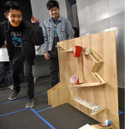
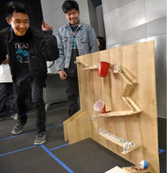

Deven Crook
Hello, my name is Deven Crook. I am currently a full time student at the University of California, Riverside, majoring in Theater, Film, and Digital Production. I was born in a city called Moreno Valley in Southern California, where I have spent all of my life. I went to a high school called Vista Del Lago, where I spent all four years before attending UCR. There, I followed the path of engineering, where each year, I took a course related to the vast subject. During my freshman year, I took a course about the intro to engineering, which is self-explanatory. I designed virtual 3-dimensional models of things such as pens, keychains, and homes. In my second year, I had a more hands-on approach, where I would construct projects using scientific principles. This included mousetrap cars, bridges, and even a Rube Goldberg machine. Then in my third year, I learned about the principles of engineering and how they worked in our daily lives. I had the opportunity to learn about insulation, architecture, and various topics involved in the concept of engineering. This was the year where I learned in detail concepts of engineering expansively. My fourth and final year at Vista Del Lago took me to a class about digital electronics, where I studied electrical devices and how they work.
While in the middle of my senior year of high school, I had to apply to various colleges for my future path. This led me to apply to the likes of UCSD, UCI, Cal State Poly Pomona, Cal State University of Fullerton, and of course, UCR. UCR was the school that made the most sense for me to attend after getting accepted by schools. The distance from where I live in Moreno Valley is not very far, and the financial aid was great for me. Also, UCR offered the major of computer engineering, which was what I wanted to major in at the time. I say this because although I have a keen mind for the world of engineering, I developed more of an interest for another subject: film. So, I changed my major to study film and explore a whole different path.
After changing my major to Theater, Film, and Digital Production (or TFDP), I decided to specifically follow the pathway of acting and directing. This introduced to me to great people that I am thankful to know today. My previous film professor Kimberly Guerrero was the first class that I took since switching my major. This introduced me to the different departments of TFDP at UCR, as well as who to talk to for my specific direction. One of my classes was with Professor Michael Bucklin, where I learned principles and tips for acting. With this, I worked with others doing scenes and monologues where I learned how to act on stage. I studied principles concerning film and wrote stories to be put into future UCR productions. I also learned about acting in front of the camera, which I am looking more into depth with.
Experience
MESA Member
• Vast knowledge of engineering concepts
• Can work with others on projects
• Creative mind
• MESA Day award Nominee
Education
UC Riverside
University of California Riverside
University of California Riverside
Portfolio


